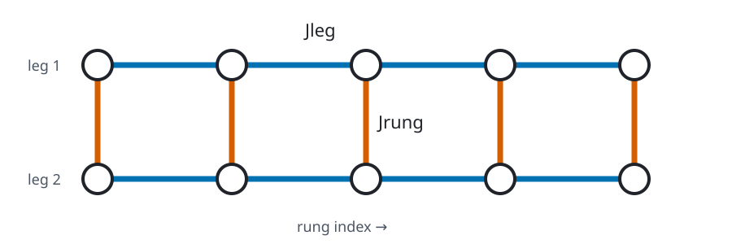

Heisenberg Ladder
Purpose and structure
The two-leg ladder couples two Heisenberg chains through rungs:
$$ H=J_{\rm leg}\sum_{\ell,r}\mathbf P_{\ell,r}\cdot\mathbf P_{\ell,r+1} +J_{\rm rung}\sum_r\mathbf P_{0,r}\cdot\mathbf P_{1,r} +g\sum_{\ell,r}Z_{\ell,r}. $$

Basis and scaling
$R$ rungs contain $2R$ spins, so the dense matrix dimension is $2^{2R}$. This grows particularly quickly.
Package use
from quantum_lattice_models import heisenberg_ladder
H = heisenberg_ladder(n_rungs=3, leg_coupling=1.0, rung_coupling=0.7)
Parameters
| Builder | Parameter | Type | Default | Constraint |
|---|---|---|---|---|
heisenberg_ladder |
n_rungs |
int |
2 |
>= 1 |
heisenberg_ladder |
leg_coupling |
float |
1.0 |
|
heisenberg_ladder |
rung_coupling |
float |
0.7 |
|
heisenberg_ladder |
field |
float |
0.0 |
|
heisenberg_ladder |
periodic |
bool |
False |
User notes
periodic=True closes each leg but does not change rung connectivity. Use
memory diagnostics before increasing the rung count.